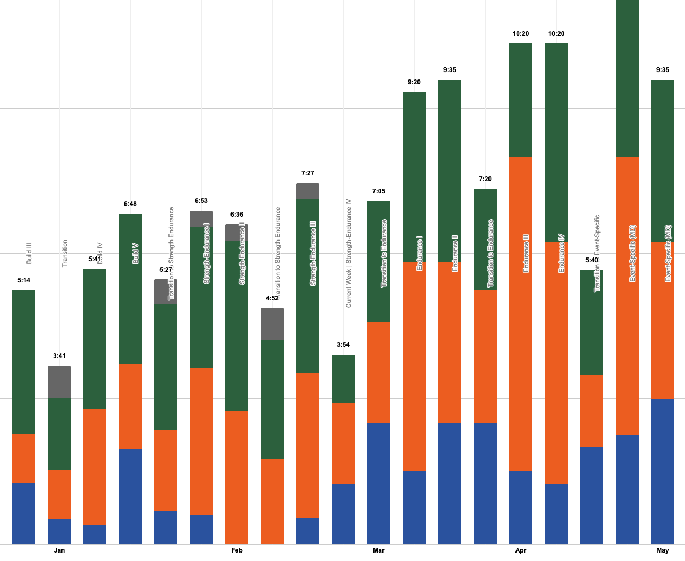

It´s prised as the “key” to become a better version of yourself. It promises you performing on a higher level as never before. It serves individual training concepts based on constant dialogues between you, the athlete, and them, the coaches. This stands on the paper. This is what is being sold and bought so often.
After years of enjoying such well “athlete-coach-relationships”, served through really bad training tools, I reached a point where I can most definitely say:
There is too much bad and overrated software in the market which does NOT succeed those scenarios I was basically looking for as an athlete, to plan my individual training based on my recent training load and its upcoming individual needs.
And to be honest really good things do not necessarily have to cost a lot of money or require to be forced in long lasting relationships or dependencies. At the end it´s not the tool, the software, which makes me better. It´s me, about the athlete, using it.
Recap: No one else knows me better than I can do! And no one is a better coach than I could ever be.
On these grounds I decided to leverage my experience from being so many years in long-distance racing like triathlon or cycling. I started developing #mytrainingplanning and guess what, thankfully by the end of 2020 we all got plenty additional and extra time to shift focus and concentration on private fun projects.
I stick to the following hypothesis: UXperience and athletes needs first. It has be easy to use, stay flexible and not an additional solution on the side of tons of other tools triathletes tend to use.
After long nights investigational work into how the Strava calculates its Suffer Score, which is based on heart rate or functional threshold powerdata and a classification of each training session into somewhere between hard to easy, I decided: this metric drives me through the proof of concept phases and gets the job done at the beginning.
It started with an empty Google Sheet and the idea to utilize nothing more than uniquely my own Strava data.
But, the more time I spent on the domain endurance training planning, the more capabilities and features I wanted to get developed, logically the biggest challenge rised, the hunger and thirst for data, more data, different data…
At a certain point Strava has either not the features or simply no interest in sharing those information I was looking for. I decided to migrate to Intervals.ICU. It analyzes rides, runs, swims and other activities. And yes, it also provides basic and advanced analytics plus planning capabilities. Which is a great tooling for itself. For me, very crucial, ICU exposes on top awesome APIs to get all my data for running my own specific #mytrainingplanning.
I am using #mytrainingplanning day in day out since 2021 now. I can´t tell to which extent I am happy with it compared to all the other solutions I investigated, started using or used longer by my own.
Drop me a message or rise your questions via my WhatsApp Community #mytrainingplanning. Happy to share, discuss on features, ideas or interest.
But first, please, get an impression on the current #mytrainingplanning capabilities or features.
Planning a Season: setting it´s periods, focus weeks and potential availability.
Each of my seasons has basically five periods with different lengths. It´s fine for me to set its length based on weeks. (see top left)
Once done with the seasonal periods it becomes more concrete. (see right area) I apply per week a certain focus plus maintain centrally my planned availability per week. This input is used at many other #mytrainingplanning places to support planning and strive for the right focus.
The top bar visualises time dimensions of either the season or its weeks. Simple. Valuable.
Where the major training planning is happening. This is the most important area where all #mytrainingplanning is happening.
Basically the following steps are happening:
1st) Day Intensity Not all days are equal. I am following a certain training pattern with build and lighter days. I need this small but very important information to start structuring and applying week pattern, which is especially for longer build periods of the year very useful.
2nd) Planning Training Sessions Up to three individual training sessions per days can be planned. Once the duration is set #mytrainingplanning estimators or the predictor starts working in the background with calculating load for each inidividual session. The more concrete the session is planned and the more historical data is at hand the more accurate the load estimate is.
3rd) Notes Optional notes per day and also per week, which is not displayed on the screenshot, can be maintained as very helpful information for planning training sessions. As you can see on the bottom right side, if there are events set in my google calendar, those days will also show up here.
Weekly planning charts
All the small things lefthandwise guide me through planning out a week. Small bar charts are visualising the distribution per week: For past weeks, the trained times are used, for upcoming weeks the planned times are shown. I can also see how much time I concretely planned compared to my principle available or already trained hours.
Biweekly Intensity Pattern
I follow a training approach of build and lighter days. For this reason I developed roughly a handful of biweekly patterns I leverage across a season depending on its period and the required load.
Weekly Sport Pattern
Basically the same as from above applies to the weekly sport pattern. Depending on the needs for different periods from the season I follow and reuse structures from those.
What do I want to train next now? What´s again the session in detail? Can I get it onto my sports watch?
I need a simple way to see what´s on #mytrainingplanning air next. It´s enough to get todays training session, but with all details: pace, wattage, duration, intensity and so on. And if I have one, a Garmin Training, it is helpful to push this training easy to my sports watch not loosing to much time in the Garmin universe.
Displays all details from training sessions from the current week plus all past and upcoming ones. The top layer, which can get hidden, shows all training sessions with all details for the current calendar week. Underneth are all historical and upcoming sessions with all details listed.
Swimming becomes an individual part in #mytrainingplanning.
As swimming becomes easily rather complex to plan and structure for triathlon training I decided to develop for this discipline an individual tool inside #mytrainingplanning. It´s fairly easy to understand: each swim training isn´t just go swimming and you´re done, it´s more. Think of my swim planner like a puzzle maximum up to 5 pieces per each session. Each of those 5 piece can be picked and choosen from the underlaying swim library.
Example
I wanna start my session quite slowly to focus on my body and movement, then a Tech Skill section shall follow and by the end a Flexibility Skill block is on the paper.
I pick the following: AE1.slw + TD1.Tech + FS4.100/100 which results in:
| Workout | Details |
|---|---|
| AE1.slw | Slow, 15min Very slow swim observe your movements, 1x (15min), 02:35 min/km, no recovery required |
| TD1.Tech | Tech Skills, 3-5x 100, Swim a mix of the following Tech Drills: Fist, open fingers, duck, water sprincle, hip dip, should dip, zipper dip,catch-up, 3-5x (100m), flexible, 15sec break between |
| FS4.100/100 | Flexibility Skills, 2-6x 100SprintFS/100HYPO3, Very good mixture of different tech and motoric skill. A very challenging and advanced set. Swim 100m include each 25m 5-6sec sprint, then following a 100m with HYPO3. It breaks the comfort zone with rythmns, swim all the time technical correct. This is very important in this set. 2-6x (100m Freestroke with each 25m sprint / 100m HYPO3), 01:59 / 02:11 min/km, 20-30sec break between |
There´s also a rough distance calculated: 1700m.
Traininglibrary with a maximum level of flexibility for Biking, Running and Strength.
My #mytrainingplanning library is made to start super simple, grown steady over the time with a maximum level of flexibility for all my bike, run or strength training sessions. The creamy cherry on the lemon cake is the individual usage of all my Pacing&Racing zone parameters like heartrate, pace or power thresholds which are being adjusted to each need of a dedicated training session.
All this can be settled in #mytrainingplanning library.
The Traininglibrary Swim keeps a maximum level of flexibility to build very detailled swim sessions.
For the discipline swimming an individual tool inside #mytrainingplanning got developed. This tooling is like a small puzzle maximum up to 5 pieces per each training session which can be picked from this underlaying swim library.
Beside several categorizing options, like session types or when´s the best point in time during a season to plan with this one, there is also a calculation for the intensity based on my current trainingzones for swimming. The parameters taken from the Pacing&Racing zones.
This keeps me maximum flexible with building up very detailled swim sessions as I like.
This is standard for training planning tools. Each athlete sets the zones differently, I do the same for me. Individual zone settings for each discipline for up to seven zones. Once done each hr, pace or power change gets automatically derived from individual test results and pushed to #mytrainingplanning sessions in the training libraries.
The small diagrams at the bottom indicate and help tracking the progress of test results.
Significant changes per discipine based on tests are maintained here. The latest results are pushed automatically to #mytrainingplanning libraries or towards the Training & Racing Pacing zones.
The small diagrams at the top indicate and help tracking the progress of test results.
Beside the planning this is potentially the most important diagram which calculates and displays the most important KPIs which are required for #mytrainingplanning.
Fitness Charts (1st/third)
The classical part of the chart:
The predictable part of the chart:
Form Charts (2nd/third)
The classical part of the chart:
The predictable part of the chart, those are the the dotted neon green lines:
Training Load (3rd/third)
Custom Training Load Chart
If the seasonal view is too much when planning concretely the next days or weeks. For this reason and as for individual purpose the amount of days from the past plus the upcoming days can be set.
Visualize availability, planned and actual trained hours per week enriched with it´s weekly Load Score.
Yes, I know thinking in weeks isn´t good as training progress does not necessarily need to happen just with weeks. Unfortunately most of us being forced to get used to weeks as we´re working for some days plus having weekend days with slightly more or a maximum amount of time available. So, yes, thinking in weeks makes or can make sense.
I see my available hours (lightest grey), my planned hours (not the lightest grey), my trained hours (the black ones) plus the sum of my weekly training load. The training load is embedded into historical and if planned in upcoming trends.
Chronic Intensity Load, CIL (1st/half)
A newer parameter to measure Training Load based on the Intensity Factor. The Chronic Intensity Factor, CIL, tells how hard a session was relative to the threshold power. Intensity Factor is an option to measure training stress exclusive of duration as length of a training session is not always key to success. The CIL is not a replacement for the CTL it complements.
Acute Chronic Workload Ratio, ACWR (2nd/half)
The Acute Chronic Workload Ratio, ACWR, shall be used to help predicting and indicating injury risks by calculating the ratio between Acute Chronic Workload, performed over the past 7 days, and the Chronic Training Load.
An overview to display:
The distance when a run is considered as a long run can be configured.
The sport specific distribution reports me per each discipline how much time I spent on each the last weeks. It also shows me how much time I plan to spend on the upcoming weeks up to the entire season.
I really need this simple visualisation to have an overview for the upcoming weeks especially for planning reasons. It helps to verify that a proper distribution is considered as I wanted to have it.

Category based reports on training session for biking & running.
Training sessions for biking and running become classified in the training library with good fitting categories like: #5 Speed/Tech Skills or #9 Run off the Bike. They are all listed top left. Those categories are perfect for running reports like: how much time I spent in each. Actually a very good “controller” if the training happened widely spread according to my strategy and principles.
Small side note regarding swimming, as this discipline is listed under #12 Swim. Swimming isn´t that straight forward to plan, when I am swimming or training to swim I normally squeeze several aspects into one training session. That´s also the reason why there´s the swim planner somewhere there.
A swim training session may look like: there is some aerobic training and/or some speed or tech drills and/or some muscular force parts and/or not and so on and so on… You know now, why swimming got hash-tagged #12.
There are several 100% stacked columns diagrams to visualize the distribution per training zone for:
An example of such one:
Power Load for Run & Bike - FTP, eFTP, rolling maximum and average Power, Daily Power Load"
Run & Bike
The following diagram is available for Bike and Run as nowerdays Wattage and Power numbers being recorded for both disciplines.
Power Load
Heartrate Load: Maximum HR, rolling maxmium and average HR, Daily HR Load.
Heartrate(s)
Heartrate Recovery for recovery and W Prime for anaerobic capacity performance.
W Prime
In bordeaux red, the line is my highest calculated W Prime (W’) value from the rolling last 30 days to indicate the level of anaerobic capacity performance.
Heartrate Recovery
HRRc, which is measured during the training session itself is a very old, but golden recovery indicator. It helps me to monitoring training status over longer periods of time. How rapidly my heart rate drops form the given threshold to baseline after hard efforts provides an excellent index about my overall freshness both during workouts and also over longer periods for recovery. The faster and bigger the gap, the better it is.
I am in training planning private business or training planning business business now. This means it´s important to understand the basic KPIs behind.
allemagne Good articles to start reading for German speaking athletes:
Pushing Limits, Jürgen Pansy erklärens ganz gut, was es ist.
english Fair starting points for non German speaking athletes:
Trainer Road, Trainingspeaks explain quite well what´s it about.
I can adjust #mytrainingplanning basic parameters:
Additional I also want to reflect historical learnings for future peak performance and training zones indication:
What´s in the book is in the books. We can´t change it. But we can learn from it and derive predictions to improve with upcoming training session. This is what´s in a nutshell behind #mytrainingplanning basic estimator, category estimator and the predictor. The latter case is automatically on the table once enough good historical data is at hand. For me it´s just pretty awesome and sophisticated backend logic leveraging the best data ever. My own one.
Results and predictions from #mytrainingplanning estimator, category estimator and the predictor are mainly used for planning upcoming training sessions and the impact on the training load.
This is awesome self-training backend functionality. Fun fact: Sport models train their own AI models with their own trainings. And if no model trains, no model trains. Screams after: Machine Learning, Artificial Intelligence. What ever… swim, ride, run.
Intervals.icu as my data hub, Strava as my personal diary.
Data Hub
Since I migrated to Intervals.icu, it acts as #mytrainingplanning central data hub. Intervals.icu can connect to the most relevant sport platforms and syncs recorded sessions automatically from there. The platform is also capable of dealing with all kind of data which are recorded during a training session. Strava has its limits.
Personal Diary
Still, all activities get uploaded to Strava as it is great to use for personal diary reasons. The mobile apps are also nice especially when adding some pictures.
Automated renaming at Strava: If wanted and configured, #mytrainingplanning will also automatically rename all my current season activities back to Strava, update the activity names and description. Deltas being identified and corrected in regular automation cycles.
Pre-Reqs
There are just some pre-reqs required:
(1) A Google Account to access Google Sheets
(2) Strava
(3) make.com, a cloud automation tool to sync meta data back and forth between Strava and Google Sheets
(4) Intervals.icu, which is the main data provider via APIs to #mytrainingplanning
Over the time I digged deeper, deeper and deeper and cooked fancy blueprints, a recipies, that all the magic happens. Awesome stuff.
All reporting capabilities or diagrams, as already described, are present at My Statistics.
When planning a season immediately the need to look things up from the past rised. It helps to learn, adapt and to become a better version of my own. All the mistakes, all the s*** and all the great results from the past are small puzzle pieces and enabler for making the future more shinny than ever.
I simply pick the year and the month which I wanna look back and its upcoming 12 months being opened.
Example: If I, and I do it quite often as many bad or good things happened back then, go back to my first Ironman season, I select 2018 and month November. This will give me results for November and December 2018 and Januar up to October 2019.
There is a diary for those 365 days now available, all events, if maintained, back to those days being squeezed in. For cases where I need to dig deeper for a specific session, there are deep-links, depending on the individual setting, to Strava or Intervals.icu.
Drop me a message or rise your questions via my WhatsApp Community #mytrainingplanning. Happy to share, discuss on features, ideas or interest.